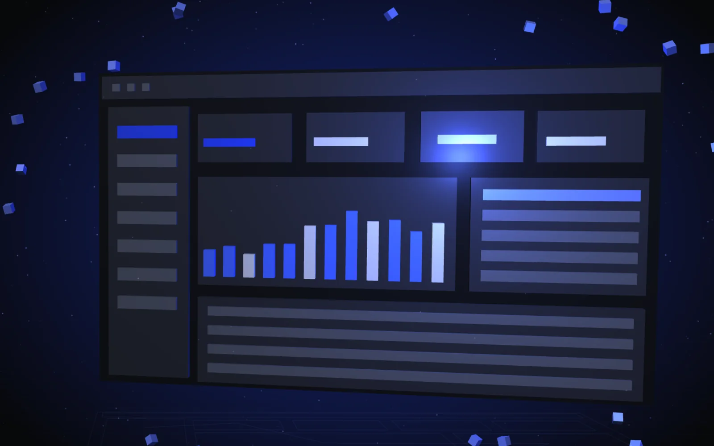
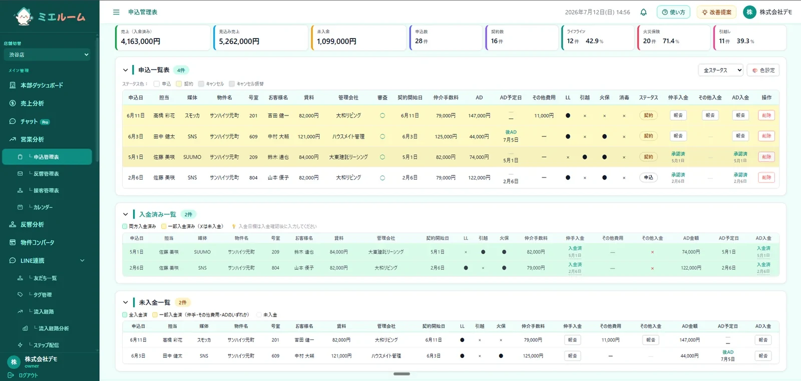
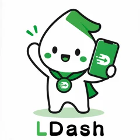

Excel、紙、LINE、人の記憶。いま業務がどこにあるのかを、1回目の打ち合わせで洗い出します。
誰が・いつ・何を入力して、何を見たいのか。流れを図にして、作る画面と機能を決めます。
Claude Code などのAI支援開発で、設計図をそのままアプリに。小さな試作なら、最短2週間で触れる形にします。

既製品では、現場に合わない。だから、業務内容に合わせてゼロからカスタマイズ。必要な機能だけを、わかりやすい価格でつくります。
「後から何か取られそう」をなくします。ヒアリングから公開作業まで、必要なものは初期費用に含みます。
要件整理 → 仕様確認 → 最終確認。少ない手間で、要件定義から納品までスムーズに進みます。
サーバー・ドメイン費用、システム監視、月1回の修正対応まで月額に込み。導入後も任せられます。
AI×WEBアプリ開発をメインに、Webでの集客・運用までを一気通貫で。点ではなく線で支えます。
私たち自身が毎日使い、売上を立てているツールです。運用で磨いた知見で、あなたの業務改善も支えます。

反響・接客・売上・申込・契約書類までひとつに。賃貸仲介に特化。Excel・LINEのバラバラ管理から卒業。
店舗オーナー自身がHPを運用できるCMS。AIブログ自動投稿・必須コンテンツの公開チェックまで。

ステップ配信・セグメント・リッチメニュー・フォーム・自動化を一つに。AIネイティブのLINE運用基盤。
順位ジオグリッド・口コミAI返信・レポート自動配信。独自ツールで“見える”MEO運用代行を実現します。
現場で得た知見を、実例とともに。読んで、そのまま使える記事を目指しています。
8つの質問に答えるだけ（約1分）。御社の業務がAIでどれだけ改善できるか、診断結果レポートを無料でお送りします。